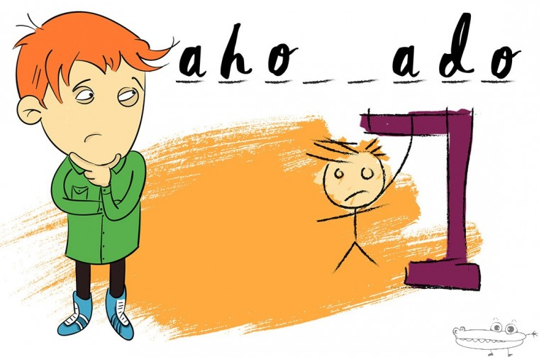

Soy GUSTAVO FERNANDEZ
.
Desarrollador Junior, en formacion tanto universitaria como particular. Entusiasta desde niño por la programacion.
.
Desarrollador Junior, en formacion tanto universitaria como particular. Entusiasta desde niño por la programacion.
.
Con mis 52 años practicamente e visto como fue la insercion de la Computadora Personal en cada casa, desde pequeño entre convenciones de informatica y PCs de amigos, hablo de las Comodore, Talent, las AT y XT, participando activamente. Luego la vida me alejo de esta pasion para retomarla nuevamente a esta edad. Hoy transitando por UTN en carrera afin y gracias a Internet tomando varios cursos de estas nuevas tecnologias. Aun como desarrollador JUNIOR esforzandome para lograr avanzar.
.
Trabajo Final de la materia Lab de Computacion 1, en Tecnicatura de Programacion - U.T.N.
Primeros pasos en lenguaje Python
.
Trabajo Practico de la materia Lab de Computacion 1, en Tecnicatura de Programacion - U.T.N.
Uso de GitHub a traves de Visual Studio Code - Creacion de Pagina WEB - HTML y CSS